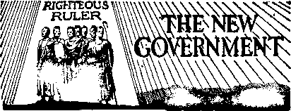
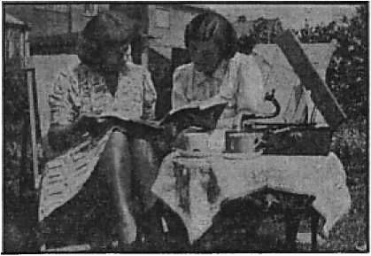
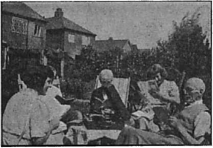

(3) First time in the work. Accompanied by an old hand.
The
Jews put
OF FACT, HOPE AND COURAGE
0 cash to avert annihilation
Little folks in Dublin causing a great impression
Residents of Old Dominion resent persecution of children
52 editorials in America’s best newspapers protest the umAmerican and dangerous discrimination against Jehovah’s witnesses
One Dollar a Year Vol. XXIII No. 598 a 81.25 In Canada and Published Every
Five Cents a Copy Aujjust 19, 1942 a Foreign Countries Other Wednesday
Contents
Jews and the Inter-Faith Hoax (Part 2)
British Comment
Children of Eire in the Temple
The New Government
“Thy Word Is Truth”
What Other People Say on the Supreme Court’s Indecision
Power to Tax Is Power to Destroy
“Plows the Bill of Rights Under”
Reversal on Flag-Salute Decision
‘The Vital Rights Lincoln Spoke Of’
First Repercussions of the Decision
Presenting “This Gospel of the Kingdom”
National Association of Manufacturers
Published every other Wednesday by WATCHTOWER BIBLE AND TRACT SOCIETY, INC.
117 Adams St., Brooklyn, N. Y., U. S. A.
Editor Clayton J. Woodworth
Business Manager Nathan H. Knorr
Five Cents a Copy
a year in the United States
|1.25 to Canada and all other countries
NOTICE TO SUBSCRIBERS
Remittances: For your own safety, remit by postal or express money order. When coin or currency is lost in the ordinary mails, there is no redress. Remittances from countries other than those named below may be made to the Brooklyn office, but only by International postal money order.
Receipt of a new or renewal subscription will be acknowledged only when requested. Notice of Expiration is sent with the journal one month before subscription expires. Please renew promptly to avoid loss of copies. Send change of address direct to us rather than to the post office. Your request should reach us at least two weeks before the date of issue with which it is to take effect. Send your old as well as the new address. Copies will not be forwarded by the post office to your new address unless extra postage is provided by you.
Published also in Greek, Portuguese, Spanish, and Ukrainian.
OFFICES FOR OTHER COUNTRIES
England 34 Craven Terrace, London, W.2
Australia 7 Beresford Road, Strathfield, N.S.W. South Africa 623 Boston House, Cape Town
Mexico Calzada de Melchor Ocampo 71. Mexico, D.F. Brazil Caixa Postal 1319, Rio de Janeiro
Argentina Calle Honduras 5646-48, Buenos Aires Entered as second-class matter at Brooklyn, N. Y., under the Act of March 3, 1879.
Notanda
Nothing to Laugh About
♦ “Protestants” and Jews who associate with the Roman Catholic cult, whether by Inter-Faith or other schemes, are poor simpletons! In the 20th century, not in the Middle Ages, “Father” Harney, a priest in the United States, said:
Certainly the Church does consider Protestants heretics ... I do not doubt, if they were strong enough, that the Catholic people would hinder, even by death if necessary, the spread of heretical errors among the people, and I say rightly so.
Jews and Protestants are considered by Rome as natural enemies and of the kingdom of Satan. Note the following quotation from The American Freeman, August, 1935:
Can you quote something that establishes clearly the Catholic Church’s policy of encouraging and provoking persecution of Jews, heathens, heretics and others?
I’d hate to condemn you to a reading of “A Dictionary of Miracles—Imitative, Realistic and Dogmatic,” by the Rev. E. Cobham Brewer (Lippincott), . . . Instead of reading the comic sections (which bore me) I get heaps of amusement out of these solemn records of the absurd beliefs of millions of persons, past and present. But all is not laughprovoking. Frequently one meets statements of belief that are shocking in their brutality. At page 19 I find the following words:
“As Jews and Protestants, as well as Mahometans and heathens, belong to the kingdom of Satan, they are the natural enemies of the ‘Church of Christ’; and to destroy them, by craft, war, persecution,, or in any other way, is as glorious as to trap a foe by ambush, or kill him in open fight. On the other hand, to persecute a Roman Catholic is to persecute Christ Himself, and to wage war against the kingdom of God. . . . For a Jew or ‘heretic’ to injure a Catholic is a sin; but for a saint to injure a Jew or ‘heretic’ is meritorious, although often it is a hazardous civil offense.”
“And in His name shall the nations hope.”—Matthew 12:21, A.R.V.
Volume XXIII Brooklyn, N. Y., Wednesday, August 19, 1942 Number593
Jews and the Inter-Faith Hoax
(In Two Parts—Part 2)
THE Roman Catholic Hierarchy inaugurated its crusades in the name of Christ. It is their method of preaching “this gospel of the kingdom”. Christ Jesus sent forth His followers with the sword of the spirit, the truth of God’s Word, admonishing them to be as “harmless as doves”. The popes, who falsely claim to be Christ’s vicegerent on earth, prefer a literal sword. During the Middle Ages many were thus “converted” to Catholicism, it being estimated that over 200,000 Jews in Spain alone became “Christians” to escape the horrors of the Inquisition in that country.
Modern-Day Parallel
Such mass conversions find a modern-day parallel in the lands of the totalitarians, which further serves to link inseparably the Catholic church, the dictators and the revived Inquisition. The National Jewish Ledger, August 16,1940, is much concerned over the wave of “conversions” of Jews to the Catholic church, and also shows the reason for such influx into the fold of the Vatican. It said:
A wave of conversions to Catholicism from Judaism since Italy’s adoption of racialism is giving rise to fears that Italian Jewry will not long survive as an organized community. It is learned that 5,500 Jews have either been converted or have withdrawn from the Jewish Community, which is a preliminary step to conversion. This figure represents 18 percent of the total Jewish population in Italy.
The current epidemic of conversions is generally attributed to international developments and the desire of those seeing no other possibilities to secure the protection of the Church. Most of the converts hope that membership in the Church will exempt them from the racial laws . . . One result of the situation is that a number of full-blooded Jewish Catholics are considered “Aryans” while members of their families are regarded under the laws as Jews.
If the Roman Catholic Hierarchy is so persecuted (as it bewails) by the dictators, why is it that the Jews see in her a refuge? Why does the corporate state recognize Catholicized Jews as “Aryans”? The conspiracy between the Vatican and the totalitarians is well known in the countries of the dictators, and that the Hierarchy can call off the dogs if she is disposed to do so, which she isn’t.
The Catholic church plays a different and more subtle role in the democracies, posing as a victim of martyrdom at the hands of ruthless dictators that she might play upon the sympathies of the people here and through Inter-Faith and other wily schemes infiltrate and honeycomb Protestantism and Judaism. Thus she destroys the once virile strength of her two old enemies.
Doubtless the church does not relish the necessity for such subterfuge; she would much prefer the open and above-board tactics of the Inquisition, old and new, by “conversion” ‘at the point of a sword’. Not having progressed to that point in this country, however, she uses the innocent-appearing Inter-Faith snare to lull into a sense of false security any who might be obstacles in her path, and the Jews are obstacles because of their distaste for regimentation of any kind. Any who fall for this subtle machination of the Devil are due for a rude awakening!
George Cardinal Seredi graciously “invited” the Jews in Rumania to be baptized, pending anti-Semitic legislation. This invitation was stated in an Associated Press dispatch from Budapest, and was published in the Cincinnati Times-Star of December 21, 1938. It is as follows:
Justinian George Cardinal Seredi, Archbishop of Strigonis, in a pastoral letter setting forth the Catholic attitude toward pending anti-Semitic legislation, declared today that “all who come for baptism must be received with love”. In the case of adults, including Jews, a three-month probation period would be required during which the applicant for baptism must receive religious instruction for two hours weekly. Marriages are to be examined for validity from a Catholic point of view, the letter said. Anti-Semitic restrictive measures are to be introduced in Parliament Friday. It was said unofficially that in the professions Jews would be limited to seven per cent of the number of persons engaged in them throughout the country. The percentage of participation in businesses will vary.
Doubtless the marriages which are to be examined for validity “from a Catholic point of view” will be found invalid, and the ceremony will have to be administered again, to “take”, and that will take money.
Gifts—Ancient and Modern
Becoming “Christian” a la Hierarchy does not solve the Jew’s difficulties. It merely brings him into closer relationship with the Catholic church for more systematic exploitation. Those who sought such means of escape during the Inquisition were continually suspected of heresy and their confession and repentance must be accompanied by a large “donation” to the “Holy Office”.
In Spain before the “Christian” rulers were so powerfully entrenched as to inaugurate their infamous Spanish Inquisition and take the drastic action against the Jews that they wished to take—and later did—the numerous synagogues paid a capitation tax and, in addition, made gifts or presents to the infante, the nobility, or the Catholic church. Such presents did not sufficiently appease the Hierarchy, however, nor did they stave off the Inquisition then brewing.
The United Jewish Appeal for Refugees and Overseas Needs recently donated $125,000 to Pope Pius XII for distribution to refugees. (Incidentally, one of the co-chairmen of the Appeal was Rabbi Jonah B. Wise, the ‘bright flower’ of the Inter-Faith shindig held at the Waldorf Astoria.) The church is as yet not powerful enough in this country to revive her Inquisition to the same extent as she has been able to do in Europe; and until she can, she must content herself with presents, just as she did in Spain before her power burst forth in full Inquisitorial bloom.
“Deeply Moved”
Does the Appeal think that by such gifts she can avejt the gathering storm, or is it a ‘delaying action’ maneuver? What did she get in return? A “thank you” from the pope and the assurance that he was “deeply moved”! This man is “moved” and “wrung” and “touched” so often (as reported in the public press) that it seems something a little more out of the ordinary could be drummed up for $125,000. A person far less susceptible to emotion would be “moved” by such a gift. The secretary of state of the “Holy See” is the one who passed this trite expression on to the donors. Seems that these Vatican pages could be given a pep talk to instill a bit more variety into their statements. It might stimulate more presents! By the way, why are the presents mostly to, seldom from, the Vatican?
Others Moved by the Gift
Many Jews in this country were dum-founded by the action taken by this organization. The Jews resist Nazism and Fascism, and then some of their leaders present the real source of these monstrosities with $125,000! Joseph Hoffman Cohn, editor of The Shepherd of Israel, writes bitterly of the thinly-veiled bribery of his brethren according to the flesh:
Humiliating and disillusioning was the revelation in the newspapers a few months ago: “The United Jewish Appeal for Refugees and Overseas Needs has allocated $250,000 for assistance to Christian refugees. Half of the sum was to be distributed by Pope Pius XII as a memorial to his predecessor.” Relief funds, gathered from the blood-sweat of thousands of poor Jews, in response to heart-breaking appeals from the Jewish relief societies to send immediate help to their fellow Jews across the water who were suffering the throes of death agonies and worse, at the hands of brutal Nazis, this blood money was handed out glibly and without a quiver of conscience, $125,000 of it, to the Pope! What for? To add to his already over-bloated coffers of gold . . .
What is it that seems to blind our Jewish leaders that they cannot see straight even in these dark hours of Israel’s hell? Can it be true that the old adage, “Whom the gods [demons] would destroy they first make mad,” is working out before our eyes in this very instance? Do not our Jewish leaders know full well the bloody history of Romish hate against the Jews through these last two thousand years? Do we need to remind them all over again of the Spanish Inquisition, the Torquemadas, the massacre of St. Bartholomew, the demon hate of Pope Gregory, the long -bloody trail of Romish slaughter of uncounted millions of helpless Jews through the ages? Does any Jew think that Rome is today different thaii she was a thousand years ago? Do you not know if Rome had her way in America at the present hour, the streets of our country would run red with Jewish blood ?
What possesses our Jewish rabbis to fraternize and fellowship with Roman Catholic priests? Have we gone sheer mad? Did these Jewish leaders think that by this gesture of magnanimous charity for the Roman Catholics they were going to buy the Pope’s good will ? Then a thousand shames upon them. It is the same old story of the Jewish leaders betraying the great mass of the Jewish .people, and we shudder to think of what an accounting they will have to give to God for such cowardly conduct.
At least some of the Jewish people are alert to the true position of the Roman Catholic Hierarchy. It is believed that many Jews not only see the situation in its true light but also have the backbone to speak about it when the occasion arises. Maurice Kesner, in the California Jewish Voice, issue of July 19,1940, does just this, and calls a rabbi spineless and a fool for appeasing the “church”, and having an ‘escapist complex’. He said:
“Jews are weeping because Europe is dying. Jews are bewailing the demise of a civilization marked by the splendor of two thousand years of the glorious European culture which produced Luther, Shakespeare and the Gothic Cathedrals.”
This point of view sums up a prominent local rabbi’s “inspiring” last sermon of the season. This was the picture painted by the spiritual head of one of our most pretentious temples. And we may well ask, For whom was this picture painted? Was the rabbi making a gesture to impress his gentile contemporaries? Or does he really interpret the significance of medieval culture in the “light” of its magnificent cathedrals?
If the rabbi painted this picture to ingratiate himself into the “inner circle” of gentile society, then we can only repeat with the prophets of old, “Woe unto thy people, O hypocrite ...” if a rabbi, of all people, actually sees Gothic Cathedrals as a blessing to culture and civilization he is the most blatant of fools and the most ignorant of ignoramuses.
Gothic Cathedrals ornamented with the plundered gold of murdering crusaders! Gothic Cathedrals builded upon the bones of countless innocent victims of man’s selfishness and lust. Heroic knights, clad in costly armor, hewing down Jewish mothers and babes in their merciless march through European towns to the holy shrines! Kings and Feudal Lords rationalizing their medieval blitzkriegs by pretending to champion love and mercy, only to slay those who would not' succumb to spiritual and physical slavery!
Long centuries of lust and greed and war and the lack of elementary human principles have resulted in the rotting carcass which we call Europe today, of which Hitler is but the final stench. If this particular rabbi’s sermon is a sample of the type of sermons that is being preached in our temples and synagogues today, then it will truly be the LAST sermon.
Sign of the Cross
Some of the Jewish leaders, such as this rabbi and those at the head of the Appeal, are evidently blind to the historical facts herein reviewed, or they are loath to see their full import relative to modern-day events. As the foregoing quotation suggests, they fawningly curry the favor of the Roman Catholic cult, seeking to ingratiate themselves by smooth words and gifts. ‘The fear of man (or men) is a snare!’
History is repeating itself, and one doesn’t have to put one’s ear to the ground to hear the ominous rumblings of the Inquisition coming to life! From the comparisons made in this article between the past ages and the present day, it is clearly seen that the laws and acts against the Jews in totalitarian countries at this time bear the unmistakable “sign of the cross”! Let wishful thinkers refuse to read this “sign” and succumb to the enticing “song of the harlot”.
Many priests in this country have manifested anti-Semitic tendencies. This fact is so well known that further elaboration is not necessary. Coughlin is the most flagrant, but he is just a “feeler” put out by the Hierarchy. He is the spearhead’ or opening wedge for the heavy artillery—the putting into operation of the papal decrees long ago established and still in existence.
Appeasement Futile
“Buying” protection from gangsters is an expensive, never-ending process, and the security so obtained is always precarious. Bribes, gifts or presents may postpone, may be a ‘delaying action’, but, like the unfortunate goose that laid golden eggs for its master, such dribbles will but temporarily slake the greedy thirst of the Roman beast! As her totalitarian champions have overflowed one nation after another, the Jews, as a working, valuable and respected part of society, have ceased to exist as such and have been looted and killed. The aim of the Roman Catholic Hierarchy is to convert, or, failing in this, to destroy; never to tolerate!
These facts are not aired for the purpose of stirring up hate. It is for the enlightenment of the people that they might shy away from such subtle entanglements as Inter-Faith. If the acts here reviewed are hateful, that is the responsibility of those perpetrating them. Some might say, ‘Why not let sleeping dogs lie?’ That, one would be willing to do, but this ‘dog’ is no longer sleeping! The Vatican could call off or excommunicate its cur Hitler if it wished, just as it could squelch the anti-Semitic Coughlin, if it so desired. Now let all those who wish to play the ostrich and stick their heads into the sands of InterFaith do so. These facts have been ventilated as a warning to sincere and honest persons who desire to know the truth. Their only source of protection will be duly disclosed.
Self-Justification
Some attempt to justify their persecution of the Jews, saying it is because of their business methods. Big business is a devilish thing, whether it be conducted by Jew or gentile. There is no justice in making the Jews the scapegoat for the entire setup. If the Jew is more acute and prosperous in such enterprises, the “Christian” may thank himself. Barred from many professions, refused the privilege of owning land to farm, confined to the ghetto slums, how was the Jew so restricted by papal decrees to earn a living other than as merchant and moneylender?
Another reason given for Jewish persecution is that they resist conversion to “Christianity”. When the world thinks of Christians today they mistakenly think of Catholics or Protestants. This being true, it is little wonder the Jews refuse to join the ranks of these pseudoChristians of the Hierarchy who have so violently persecuted them for nearly 2,000 years! ‘If such are the fruits of Christianity,’ they say, ‘we want no part of it!’ They fail to see the distinction between Christians and religionists.
Perhaps the most frequent charge laid at the door of the Jews, and the excuse given for their mistreatment, is that of being “Christ-killers”. For this reason both Protestants and Catholics discriminate against the Jews. The Jews on earth at the present time had nothing to do with the crucifixion of Christ Jesus. How can they justly be made responsible for something which happened 1900 years ago % Are Catholics hated because of the wicked Inquisition of a few centuries back? They are not, and should not be. Nor are the Catholic people today despised because of the evils of the present Hierarchy. Yet the entire race of the Jews is made the scapegoat for the actions of a few.
Jehovah God cast the Jews, off as His chosen nation, but He has not discriminated against them in the manner in which His supposed followers, particularly the Roman Catholic church, do. “For there is no difference between the Jew and the Greek: for the same Lord over all is rich unto all that call upon him.” (Romans 10:12) Note that this statement was made after the crucifixion.
In fact, for three and one-half years after the death of Christ Jesus the preaching of the gospel was limited to the Jews. There is no difference with Jehovah between Jew or gentile, bond or free. But the Roman Catholic sect not only adopts the “holier than thou” attitude condemned by Isaiah, but also poses as ‘holier than Jehovah’.
Demon Influence
Above are some of the reasons given by those who oppress the Jews. The real ones are more likely as follows: First, a desire on the part of the Hierarchy to rob the Jews of their money, as they did during the Inquisition. A Catholic nobleman at that time would become greatly indebted to a Jewish moneylender; then in the name of his religion, crying “Christ-killer”, would proceed to erase both his debt and his creditor.
A deeper reason, and one not generally recognized, is the desire of the Devil to reproach the name of Jehovah God. The Jews were at one time His chosen people, used by Him to make prophetic pictures of events now coming to pass. Though they no longer occupy such favored position as a nation, the Devil and his demons think by heaping ignominy upon them they further reproach the Almighty, since the Jews still claim Jehovah as their God.
This hatred of the name Jehovah by the demons is reflected by their visible representatives on earth. The Nazis, recognized by many as being under demon control, manifest this by banning the word “Jehovah” from the Reich churches. Some in this country follow suit, as shown by the following, which appeared in The Oregonian, of Portland, Oregon. Under the heading “‘Jehovah’ Term Meets Bible Ban”, it said:
The word “Lord” will be substituted for “Jehovah” in future editions of the American standard Bible wherever the Hebrew name for the deity appears, Dean Luther A. Weigle of the Yale divinity school announced Sunday.
Dr. Weigle, chairman of a committee of eight scholars and Bible experts who have been working on a revision of the Bible, said the change was being made “because Jehovah is not a functioning religious term”.
That, Mr. Weigle, is ‘wishful thinking’. Jehovah’s “strange work” is now “functioning”, and soon, at Armageddon, His “strange act” will convince everyone of Jehovah’s existence. The American Revised Version of the Bible states over sixty times in Ezekiel that at that time ‘they shall know that I am Jehovah’:
The Wise Course
The Jewish people today should awaken to the fact that there is a vast difference between these religionists who claim to be Christians and those who are truly Christ’s footstep followers. They should not permit themselves to be misled by their leaders into sugar-coated Inter-Faith fables which will put them in the position of fighting against God. There is one thing on which this InterFaith combine does agree, and that is their opposition to Jehovah’s witnesses. A Protestant, a Catholic and a Jew are placed on a censorship board to presumptuously check before broadcasting the message of Jehovah’s kingdom! They realize the truth of God’s Word condemns every one of them. Thus they ‘incorporate’ for mutual protection. It will not save them!—Isaiah 8: 9,10.
When Christ Jesus was on the earth, the common people among the Jews heard Him gladly. Why won’t they today ? American Action, Leaflet No. 3, under title “The Jew”, says:
In doctrine and in blood Jesus was a Jew. Some Jews—put in office by the Romans, and apostates to the Jewish faith—were against him. The masses of the Jews, the common people, were for him. The Romans, who were pagans and idolaters, worshipping the Emperor as a god, remained pagans and idolaters, but they switched their idolatry. They took the label of the Cross, after they had corrupted the church. . . . They changed his pure doctrine into a rigmarole of idolatry, and used it to prop up the political supremacy of wicked and bloody Roman emperors like Constantine. They made Constantine a saint (divus). From that time on began the Catholic persecution of the Jew, which continues down to our own day. Hitler, in pressing this persecution, shows that he is but one of the spiritual wrecks of Catholicism, the end of an age.
The Jews here referred to as ‘apostates to the faith’ were the religious leaders who opposed Christ Jesus and hindered others from entering the Kingdom. Apparently multitudes of the common people would have done so, but these leaders sided in with the dictators of that day, saying, “We have no king but Caesar.” Such religionists so blinded the people that in the end Christ’s death was by popular demand. The same thing is happening today. Some of the Jewish leaders are drawing their people into an affiliation with the modern-day Caesars by association with the backers of the dictators, the Roman Catholic Hierarchy! This they do by Inter-Faith.
It is a subtle snare of the Devil to bring all into his camp and oppose The Theocracy. Do not be ensnared therein by fear of man or a desire for man’s approval. “The fear of man bringeth a snare: but whoso putteth his trust in the Lord shall be safe.” (Proverbs 29:25) Let all those, whether they be Catholic, Protestant, or Jew, who love righteousness and hate iniquity, who desire the Lord’s approval and everlasting life, avoid such unholy alliances. Take a stand firmly and immovably on the side of Jehovah God and Tdss the Son, lest ye perish’. Look to and serve the God of Abraham, of Isaac, and of Jacob. Only by so doing may one have deliverance from the unrighteousness now rampant in the earth. “Offer unto God thanksgiving; and pay thy vows unto the Most High: and call upon me in the day of trouble; I will deliver thee.”—Psalm 50:14,15.
British Comment
By J. H emery (London)
[Compiled, this issue, in America.—Ed.)
Children of Eire in the Temple
♦ Dublin, the capital of Eire, has a population of about 320,000, 90 percent of which is Roman Catholic. The other 10 percent is made up of Jews, Masons, and various Protestant sects. The priests are zealous to keep the majority at the status quo; therefore they are constantly on the alert to see that there shall be no proselytizing by the “Protestants”.
There is in the town a medical mission conducted by a Protestant sect which gives free advice and medicine to the sick poor. Many poor, down-trodden Catholics avail themselves of this favor, but in order to receive treatment they have to run the gauntlet, being abused by a Roman Catholic picket which parades up and down outside the entrance to the clinic. In spite of this, Jehovah’s witnesses continue to function and show progress in the city. A splendid witness was given during 1941. In the spring the rulers, press and clergy were served with the Fifth Column booklet and Kingdom Fews No. 9; and in the summer, with a copy of the booklet Theocracy. A public lecture was given reproducing “Government and Peace”, which attracted many strangers. This angered the religious leaders, and, strange to say, it was a Protestant clergyman of the Church of Ireland who took the initiative to cause trouble for Jehovah’s witnesses. This distinguished gentleman sent a letter to us asking us to call on him to give an account of ourselves. This we ignored; which must have cut him to the quick, for another letter came saying that if we did not withdraw Judge Rutherford’s books from circulation at once, he would take further action against us. We ignored that letter also, treating it with the contempt it deserved.
Soon thereafter action was taken. Little groups of men were seen to be watching the Kingdom Hall every meeting night. The company servant and secretary were shadowed to their lodgings. Two detectives stopped them one night in the street and examined their case, which contained only Bibles and the Watchtowers for the evening study. They were also subjected to much questioning, after which the detectives apologized, saying they had made a mistake. Another detective attended two service meetings and we treated him as a brother. He did not reveal his identity (but we guessed it) until after the end of his second visit, when he admitted that he was impressed with what he had heard, although coming with an ulterior motive. He must have given the authorities a good report, because we were not suspected again by them.
The Eire Constitution of 1938 allows for freedom of worship, and most of the members of the Dail (Irish Parliament) are fair-minded men, which is proved by the fact that many Protestant sects are allowed to air their views at street corners under police protection, and a more tolerant attitude is shown to all classes; more so than at any time since the 1916 rebellion. The company servant received a letter from a friend saying that there was a plot to beat up Jehovah’s witnesses. The police must have heard of this plot, as we were under police protection for a while; and although we saw hooligans staring at us as we left Kingdom Hall, no attempt was made to use violence. No doubt the authorities remember the court case centered around Jehovah’s witnesses in 1937 and which caused a great stir throughout the whole of Ireland on both sides of the border, and do not wish for a repetition of that scandal; or it may be that the Irish, being noted for their contrariness, are allowing them to function because they are being hindered in every other country today.
The Irish are a lovable people and respond quickly to kindness. Some say Joshua ‘was an Irishman, because, according to Numbers 13:16, his original name was O’Shea’. Without doubt the Irish have suffered oppression in the past and have looked to men such as Parnell, O’Connell, Wolfe Tone, and in later years Michael Collins and De Valera, for deliverance, to give them a land flowing with milk and honey; but these men, although sincere in their convictions, could not give them the desire of their hearts.
Many of the Irish are realizing this now and are more receptive to the message of The Theocracy. This message is being brought to them now by little children of tender years and is causing a great impression among all classes in Dublin. These little children of the King have outstripped their elders in their hours spent in the field. Their zeal must be pleasing to Jehovah and His Son; but the clergy, being unable to stop the “Hosanna’s” shouted by these little ones, are continually mingling with their appeals for money denunciations of Jehovah’s witnesses. All over Dublin we are asked by perplexed people, “Why is our minister against you people? You seem to be doing a good, Christian work, and he is supposed to be a good, Christian man.”
This causes many to doubt the genuineness of their spiritual leaders, and some Catholics and Protestants of good-will are taking a definite stand and are serving The Theocracy. So the interests of the Kingdom are increasing in this dark land once referred to as “the brightest jewel in the Pope’s crown”.—J. H. Corr, Dublin.
Britain’s Interests vs. Those of Firms
♦ Let honorable members think of these points. It is in our interest to postpone every postponable repair; it is in the interests of the owners to get every repair done and have it charged up to the excess profit tax. It is in our interest to work the good seams in the coal mines now; it is in the owners’ interests to postpone work on the good seams until after the war. It is in our interest to share trade secrets; it is in the owners’ interests to preserve them. It is in our interest to concentrate output in every factory on one or few products; it is in their interests. to keep the factory flexible by making as many different products as possible. It is in our interest that skilled men should spend part of their time teaching their skill to unskilled men; it is in the owners’ interests that skilled men should be kept on direct production all the time. It is in our interest to save paper by cutting down advertising; it is in their interests to spend money which belongs to us—because otherwise it would go in excess profits tax—in advertising things like aeroplane parts.
Let honorable members look at technical journals such as Flight, and they will find them filled with advertising of aeroplanes. It is simply a* question of our money being used to build up postwar good-will. It is in our interest that women should replace men; it is in the interests of the firms to hang on to the men because they know that the women will go away after the war. It is in our interest that half-used machines should be sent to factories where they would be fully used; it is in the firms’ interests to disguise the fact that the machines are half used. It is in our interest that skilled workers, when work falls off in one factory, should be sent to another factory ; it is the firms’ interest to hang on to skilled workers in case a good order should turn up. It is in our interest that every productive resource should be pressed into service; it is in the owners’ interests to wonder whether there will not be surplus productive capacity at the end of the war.—Sir Richard Acland, M. P., in the House of Commons, [/n Fact prints the whole speech, and says it was unreported in America and mostly suppressed in Britain because in it “the same business-as-usual system of Big Business which ruined the first 18 months of the American defense program is attacked in Britain”.]
The Joy of One Deaf and Dumb
♦ I wish to let you know how happy I am. I have the joy of the ‘cup- running over’.
I believe Jehovah directed one of His witnesses to me. Some had previously called at our house but I am deaf and dumb and rather hesitated. At last a pioneer witness came round, and after reading her card I inquired of the things I wanted to know. She brought many books for me to read and a brother came with her to my house to study.
I had over 40 religious books, but I threw them all away. The books which they brought make me search the Scriptures every time.
I am very grateful to the Lord for the timely advice and counsel I have received under His most tender lead. I pray Jehovah’s rich blessings upon my pioneer friends and all His true witnesses. I am glad that I am now on the Lord’s side and a true witness too.
It seemed that the lamp was burning at my feet a little, but now the path is so clear that I too am able to help feed the truth-hungry. My young son, who can speak and hear, is also now a worker for The Theocracy.
I thank Jehovah that eight deaf-and-dumb people that I have told of the truth have asked to subscribe for The Watchtower.
The Harp of God and Model Study books 1 and 2 are most helpful to deaf-and-dumb people of good-will. I would like to know if I could have 25 of each Model Study booklet.
I would be very pleased to know of any other deaf-and-dumb people who desire to know the truth. We rejoiced to be with the Lord’s people at the great assembly for worship at Leicester.
Blessings be with you all the time, that these favors may continue until the “strange work” is done; and that time appears very near.—B. J. C., England.
Freezing Level
♦ British aviators now receive information as to the freezing level, which in winter is 3,000 feet up and in summer 10,000 feet up, for a distance of about a mile. The Spitfires plan to go through the freezing zone in just over three minutes. A warplane bogged with ice is booked for destruction. Above the freezing zone the water has already formed into ice crystals and does not stick to the plane.
Jehovah Answered His Prayers
♦ At Lowestoft, England, one of goodwill toward God prayed every night that His blessings might be upon His witnesses and that he himself might come in touch with them. Sure enough, along came one of the witnesses, with the latest publications; a model study was started, and now the man and his twelve-year-old daughter are both active publishers for The Theocracy.
Plant Refugees from Britain
♦ Miami, Florida, houses at present the rare strains of orchids developed in Britain by the duke of Westminster, but which could not be cared for in England owing to lack of fuel and the possibility of ruined greenhouses due to bombing. It is claimed that to replace these orchids would require several generations of plant life.
Two Belgian Boys Got Across
♦ Five Belgian boys tried to row from their country to Britain, a long, hard trip in a rowboat. The second day out, German airmen saw them and machine-gunned the boat and killed three of the boys; but the other two managed to get through all right.
Something Starts in Virginia
♦ The school board of Southampton County maintains the unfortunate position that what America needs is what may be called “elbow” patriotism. The elbow kind can be performed by anybody who doesn’t have a stiff elbow. But it means nothing at all; absolutely not one thing. For example: In India are religious zealots who hold the right arm straight up above the head until it becomes stiff and cannot be moved. It’s very religious, but after that the elbow saint is really in the way. Somebody else has to wait on him. There is no connection between his brains, if any, and his elbow. The Southampton County school board is like that. With these few kind words there now follows a letter to the courageous and capable Richmond (Va.) Times-Dispatch, and following it an editorial by the Times-Dispatch itself.
Besmirching Virginia’s Name
Editor of The Times-Dispatch:
Sir,—In the name of our old and determined stand for religious freedom, I must protest against the oppressive action of the school board of Southampton County in expelling certain pupils from the public schools for the reason that on the grounds of religious conviction they could not make a salute to the American flag.
We have boasted of our religious freedom for over 150 years—we respect the religious convictions of the Quaker and do not compel him to take an oath. Because his religious convictions forbid him to bear arms we release him from the duty resting upon all the rest of us of answering the call of our country to take up arms and fight fop the protection of our institutions.
But because a small and harmless denomination of Christians in our State hold it contrary to their religious beliefs to salute a national flag, an authorized and most important agency of our State and local government is punishing them by making a shibboleth of the flag and depriving these children of the privilege of public education. I personally do not hold this particular belief of “Jehovah’s witnesses” any more than I do the pacifist beliefs of the Quakers, but I am convinced that as loyal American citizens I, and every other member of a Christian church, must stand up to defend and protect the religious freedom which is being attacked by these public officials in Southampton County.
From what I know of “Jehovah’s witnesses,” they are a quiet law-abiding people of good moral character, determined to live according to what they understand the Bible to teach. If they were notorious lawbreakers and guilty of misconduct that made them a menace to public welfare, there might be some reason for repressive action against them. But to take away a child’s opportunity for education simply because his faith forbids him to perform a purely manual act of salutation seems a pretty heavy penalty to inflict.
I am convinced that our State and our country need very badly the kind of loyalty that shows itself in observance of road and other laws, in conforming strictly to all the ways of economizing in our own expenditures and in taking part in every way possible in all efforts for public welfare and the support of our national government. I think that these things are far more important than any manual act of salutation to the flag or trying to sing an impossible tune.
I feel a deep sense of shame that in our own State of Virginia a representative body has so lost sight of our ideals as to exercise arbitrary power in this short-sighted fashion.
I trust very sincerely that there will be many-members of every leading denomination of churchmen in Virginia to rise in protest against their action.
G. MacLAREN Brydon.
Richmond.
[Editor’s Note: The foregoing letter is commented upon editorially today, under the caption, “Besmirching Virginia’s Name.”]
Of this company of Jehovah’s witnesses at Belize, British Honduras, five have just been immersed. The record (P-36) which explains the meaning of baptism had just been played on the sound-car partly shown in the center.
The foregoing appeared in the Richmond Times-Dispatch for March 19, 1942. In editorial the same paper, on the same date, said:
Even though local school boards have the legal right, under the Federal Constitution, pursuant to an unfortunate United States Supreme Court decision of some years ago, to suspend pupils who refuse for religious reasons to salute the American flag, the board of Southampton County should never have suspended four children for such failure. Suspension of a child from school because his parents have certain conscientious religious beliefs and have instructed him accordingly is directly contrary to some of the major tenets on which America was founded. It is particularly regrettable that this should have happened in Virginia, the original home of the Bill of Rights, and it may contravene the State Constitution.
As Dr. G. MacLaren Brydon, a distinguished Episcopalian clergyman and student of religious history, says in a letter at the head of today’s Voice of the People: “We have boasted of our religious freedom for over 150 years . . . but because a small and harmless denomination of Christians in our State hold it contrary to their religious beliefs to salute a national flag, an authorized and most important agency of our State and local government is punishing them by making a shibboleth of the flag and depriving these children of the privilege of public education.”
Jehovah’s witnesses have been hounded and persecuted in recent years throughout most of the United States for their refusal to salute the flag. We in Virginia flattered ourselves that the birthplace of Thomas Jefferson and George Mason was above such performances, but the school board of Southampton County, doubtless with the best of motives, has shown that “it can happen here”. The best thing that board can do now is to call a special meeting, repeal its obnoxious ruling, and invite the four unfortunate children back to school.
We hold no brief for the religious tenets of Jehovah’s witnesses, of course, but recognize their right to sincerely held convictions, even to convictions which forbid them to salute the country’s flag, on the theory that it is a “man-made symbol”. City Superintendent of Richmond Schools Jesse Binford gave a perfect example of intelligent handling of such a case when it arose here a few months ago. We commend his restrained and sensible approach to the authorities of Southampton County.
Two days passed and the Norfolk Ledger-Dispatch had this editorial:
What About the Children?
We are not concerned with the legal implications of the flag-saluting incident in Southampton County. We presume the school board acted within its rights in suspending from classes four children who, because of the religious beliefs of their parents, refused to pay required respect to the national symbol.
Witnessing in Essex, England. (1) The baek-eall. “Comparing scriptures.”
Nor, for the purpose of this discussion, are we concerned with the attitude of Jehovah’s witnesses toward outward gestures of patriotism.
We are interested primarily in the plight of the children, who are not responsible for the notions, queer' or otherwise, entertained by their parents. These children are placed in an indefensible position. They must obey their parents. Yet, without any recourse whatever, they were brought face to face with an iron-clad rule of the Southampton County school board. What were they to do? They refused to salute the flag on home orders. Drastic action by the school board then followed.
Certainly, it cannot be charged in logic that these children, in their refusal to participate in a gesture of patriotism, thereby proved themselves to be unpatriotic. The impulse of patriotism, to be meaningful, must come from more mature folk. And if the action of the board did not teach a lesson in the duties of citizenship, what did it accomplish ?
Just one thing. It deprived these children, for the duration of their suspension, of educational advantages. And the consequence of that deprivation is plain. These children have been denied the privilege, by action of the board, of training at impressionable ages which has as its main purpose the laying of a firm foundation for good citizenship. Thus nobody benefits. There is something out of
(2) The Model Study. Neighbors come in.
joint somewhere that causes these periodical clashes between patriotism and religion.
The above was on a Saturday, and it must have been the next day, Sunday, March 22, that the Virginian-Pilot had the following excellent review of many of the most important features of this unhappy subject:
Four Children Without a School
The State of Virginia, acting through the school authorities of Southampton County, has exacted a cruel penalty from four children. One of them is of high-school age. The ages of the other three range from 7 to 13. They have been expelled from school because they have refused to comply with the flag-saluting rite prescribed by the county school board in a ruling adopted on February 19. Their refusal had nothing to do with any political alienism. It grew out of their home training in religion.
The parents of these children are members of the Jehovah’s witnesses sect. It is one of the beliefs of this sect that saluting any national flag is an act of State worship and a sin against God. Minor children of Jehovah’s witnesses homes are no more to be held accountable for their acceptance of this dogma than are minor children of homes ruled by other religious dogmas for accepting the doctrines peculiar to these other beliefs. To kick them out of the public schools because this parental indoctrination does not permit them to enact their full part in a patriotic ceremonial, is to violate the guarantee laid
(3) First time in the work. Accompanied by an old hand.
(4) On her own. “Let him that heareth say, Come.’’ —Revelation 22:17.
down in the Virginia Bill of Rights which declares—
“That religion or the duty which we owe to our Creator, and the manner of discharging it, can be directed only by reason and conviction, not by force or violence; and, therefore, all men are equally entitled to the free exercise of religion according to the dictates of conscience; and that it is the mutual duty of all to practice Christian forbearance, love and charity toward each other.”
In a mischievous decision on June 3, 1940, the Supreme Court of the United States upheld the school authorities of Minersville, Pa., in their enforcement against the children of a member of the Jehovah’s witnesses sect of a salute rule similar to the one now being enforced in Capron, Southampton County. The opinion was written by Justice Frankfurter and does him no credit. This is what we said of it on June 4, 1940:
“The Supreme Court’s decision in the Minersville case is in the last degree disquieting. It suggests that a whiff of the hysteria that resulted the other day in the mobbing and jailing of religious sectarians [Jehovah’s witnesses] in two Texas towns for refusing, because of religious scruples, to salute the flag, has penetrated to the nation’s supreme guardians of religious freedom.”
The mischief of this decision is that it gives the sanction of constitutional law to the rules of local functionaries in those areas where religious convictions and neighborhood patterns of patriotic behavior come into casual conflict. “The court room,” said Justice Frankfurter, “is not the arena for debating issues of educational policy.” True. But the court room is emphatically the arena for deciding questions of infringements of that freedom of religion that is guaranteed by the Bill of Rights. The Supreme Court, in this decision, washed its hands of an issue that it should have grasped and defined.
The right of religious self-determination is basic in the American system. It is beyond restriction or penalty by the political state except as to those manifestations of it that invade the rights of others or jeopardize the public welfare. In the case under discussion, the children were willing to stand up in respectful silence during the morning exercises, but not to go through the manual part of salute. To pretend that this abstention from the last refinement of a patriotic school exercise is an offense against the public safety so heinous that Virginia-born children guilty of it must be denied access to Virginia’s public schools is, in our opinion, to distort the truth and to elevate neighborhood distaste for a strange religious dogma above the constitutional command that religious dogmas are not to be interfered with or to be made the subject of political discipline.
These are days that call for the last meed of patriotism from the people. Flag-saluting exercises have their proper place in our public schools. But we have not arrived at that totalitarianism that compels school children to choose between a participation in these exercises that affronts the religious dogmas taught them by their parents, and being expelled from their classes.
We don’t know much about Jehovah’s witnesses. Some of their dogmas, including the one under discussion, don’t appeal to ,us. But if they are sincerely held—and there is no evidence to the contrary—they are as much entitled to the law’s respect as the dogmas of cults, like the Oxford Movement, which find their disciples among the best families and their butlers.
McGlothlin Resigned; School Burned
♦ At Grantsville, West Virginia, Don C. McGlothlin, principal of the high school, was asked to resign because he had respected the conscientious refusal of a 20-year-old girl to place an earthly symbol before God. The girl had enough credits to graduate, but the school board showed itself to be like other boards, long, narrow and wooden. A week after McGlothlin left, the Grantsville school, erected at a cost of $160,000, accidentally burned to the ground.
The Lord Not in Politics
♦ When I tried to explain to an interested woman that we need God’s righteous government, because we are all imperfect and it is impossible to have a perfect government by imperfect men, she surprised me by saying with tears in her eyes, “I see it all now; God has nothing to do with politics, and the Devil is at the back of all this mess.”—Bernice Weber, Maryland.
And Still They Fall
♦ For your information: Mayor L. 0. Smith, of Harlan, Ky., leading element in the persecution of Jehovah’s witnesses in Harlan County in 1940, fell dead February 12, 1942.—A. K. Robinette.
(To be continued)
Tatsui Writes from Manzanar
♦ The new city of Manzanar, California, is inhabited mostly by Japanese who like America, but must live back away from the coast on account of the war. The men went ahead of the women and children. One of them, Emon Tatsui, wrote back to his former employer in Hollywood. His letter shows a good spirit and is worth reading. It does not look as if he would ever make much trouble.
Dear Sir: Kindly send me my money to new address by U. S. Post Office money order. It may too much trouble for you but we do not have bank open yet here. I like to tell you about this camp. Nice place to live. It butter than Hollywood. Snow on mountains. French air. Snow is bright. Every day 80 to 85.
No black out in here. There are liberty, safe and build up new life. Hundreds of carpenter. Hundreds plummer. Hundreds so and so working hard to build up. 1000 Japanese coming to this camp almost every day now. Good ball ground. Base-ball field. Swimming pool. School building. Dancing room it about start building then movie is next.
Yours truly,
Emon Tatsui.
P.S. Over 300 miles away from your city but still in Los Angeles city limit.
is Truths
—John 17:17
Freedom of Worship
THE guarantee of “freedom of worship”, set forth in the Constitution of the United States and thus made a fundamental law of this nation, is entirely in accord with God’s law. (See Deuteronomy 30:19; Joshua 24:15; Matthew 19:14.) The framers of this noteworthy document, the Constitution, had freshly come from a victorious fight for freedom, and they were determined to safeguard this cherished liberty, paid for in blood and tears. The crimes of the Roman Catholic Inquisition were also fresh in their minds. The children of the Huguenots, Puritans and Quakers remembered too well the Catholic “Bloody Mary”, the massacre of St. Bartholomew’s Day perpetrated by the pope’s niece, and Torquemada, and Alva. Looking back upon these bloody pages of history the forefathers of America gave a new nation its heritage of freedom. This was indeed a worthy step. But it merely grants one permission to seek life.
Only God’s Word, the Bible, can guide us along the road to the attainment of life. The Bible declares that Christ Jesus is the way to life, and that Jehovah God’s Theocracy or kingdom under Christ will give men their heart’s desire. To this effect are the following scriptures from among the great many: John 3:16,17; John 6:35,40,47,48; John 11:25; John 14:6; Romans 6:23; and Revelation 22:3,17. No matter how conscientiously one may follow another course he cannot thereby gain life. This is specifically stated at John 3:36 and 5:40.
In 1787, when the American Constitution was written, the Roman Catholic Church was openly at war with all the children of the Protestant Reformation which had been led by Luther, Zwingli, Huss, Latimer, and others, who sought to tear the bloody blindness of Romanism from the minds of the peoples of Europe. The popular King James Version of the Bible was one of the results of this battle in England, the preface to which denounces the pope in these words: “So that if, on the one side, we shall be traduced by Popish persons at home or abroad, who therefore will malign us, because we are poor . . . people, whom they desire still to keep in ignorance and darkness.” The French Revolution in 1789 came as another blow to the Papacy, and Napoleon later imprisoned two popes.
Romanism did not prosper during the next century, and, as the world-known magazine, The Watchtower, has pointed out, did not begin to raise its head again until after 1918. Except for Jehovah’s witnesses, Americans would have forgotten these past pages of history. Only Jehovah’s witnesses have kept alive the annals of America’s forefathers concerning religious liberty and freedom of worship, that cherished liberty might be kept alive, both for themselves and for all others, Catholic and Protestant alike.
Those forefathers did not take upon themselves the responsibility of recommending any particular faith or religion, so far as the law was concerned, but expressly refrained from dictating to the consciences of others. They forbade the establishment of a state religion, such as now exists in all the countries under the Nazi-Papal domination. The framers of the Constitution left no guide as to the course to take but laid down the axiom that all in America would be free to choose.
Such is entirely proper and Scriptural. Before Moses’ death, and while the Israelites were in the land of Moab and about to cross Jordan into the Promised Land, Moses expounded this rule of
Jehovah: “I call heaven and earth to record this day against you, that I have set before you life and death, blessing and cursing: therefore choose life, that both thou and thy seed may live.” (Deuteronomy 30:19) Again, at Jehovah’s direction, Moses’ successor Joshua offered the people their choice, and also indicated what was the right choice, saying: “If it seem evil unto you to serve the Lord [Jehovah], choose you this day whom ye will serve; whether the gods which your fathers served that were on the other side of the flood, or the gods of the Amorites, in whose land ye dwell: but as for me and my house, we will serve the Lord.” (Joshua 24:15) Jesus Christ plainly taught that restrictions upon freedom to worship should not be permitted, saying: “Suffer little children, and forbid them not, to come unto me: for of such is the kingdom of heaven.” (Matthew 19:14) He further denounced the Pharisees for obstructing others: “Woe unto you, scribes and Pharisees, hypocrites! for ye shut up the kingdom of heaven [such as declaring Jehovah’s witnesses an "illegal organization’] against men: for ye neither go in yourselves, neither suffer ye them that are entering to go in.”—Matthew 23:13.
The Bible therefore plainly declares that each should decide for himself just how he will worship. From this it is a far cry and indeed a wrong conclusion, as will be clearly demonstrated, to decide that the Lord will bless any course followed thereafter. To believe that He will place His favor on any action we take, if this is honest and sincere, is to show contempt for God’s laws and His Word.
Yet, how many people are heard to say, “If I do/the best I can the Lord will save me”; or, “A person’s religion makes no difference, but the kind of life one leads is the important thing. The Lord is going to save the good people.” These are merely human conclusions, arrived at through human reasoning. It is therefore the wisdom of the world, which the 18
Lord declares is foolishness. (1 Corinthians 3:19) “For my thoughts are not your thoughts, neither are your ways my ways, saith the Lord. For as the heavens are higher than the earth, so are my ways higher than your ways, and my thoughts than your thoughts.”— Isaiah 55: 8, 9.
Others dismiss the matter with the words: “Nobody understands the Bible; so I will just live as "good’ as I know how and let it go at that.” These also are foolish; for they ignore the Lord’s invitation, "‘Come now, and let us reason together, saith the Lord.” (Isaiah 1:18) They also ignore the fact that “God . . . is a rewarder of them that diligently seek him.”—Hebrews 11: 6.
Often people who make such delusive statements acknowledge Jehovah with their mouths but they fail to be guided by His Word. They greatly need the “choice gold” of wisdom, the riches of knowledge found abundantly in the Bible. (Proverbs 8:10,11,18,19) The question, then, for each to determine is, Am I willing to be taught, or content to stumble along in ignorance? If they choose the wise course, they will take the way which leads to life and happiness.—Zephaniah 2: 2, 3.
There is only one way, not many ways; the fact that “strait is the gate, and narrow is the way,” shows that there is only one way, and not several leading all to the same end. Jehovah has provided that one way through Christ Jesus; and if one is not willing to accept that way or to follow that course, he will not gain the reward. “God is no respecter of persons.” (Acts 10:34) Christ’s kingdom, or The Theocracy, is the Lord’s provision for the meek and righteous, and a knowledge of this is essential to all who desire life. Therefore learn, if you will, through the Bible and the Bible helps provided by God’s organization.—Revelation 22:17.
It therefore appears that freedom of worship is proper and Scriptural. The opponents thereof who seek to convert
CONSOLATION
others by the use of carnal weapons are the enemies of Jehovah God and Christ Jesus. The permission to choose one’s way is not a road map to the way of life and happiness. A wrong choice or selection will lead to death, no matter how honestly followed. (Proverbs 14:12; 21:2) Only God’s Word of truth, the Bible, is the infallible guide to life.— Psalms 119:105; 25:12.
What Other People Say on the Supreme Court’s Indecision
TNDER a decision handed down by
LJ the United States Supreme Court this week, it is quite possible that if Jesus of Nazareth were to visit America He would be required to take out a pedlar’s license before He could preach the Gospel to any creature. For the second time in two years our judges have ruled that the American people do not think much of the religion practiced by Jehovah’s witnesses.”
In these words the Dayton Herald nicely puts its finger on the real cause of the indecision of the Supreme Court in the case of Jehovah’s witnesses. They have been influenced by religious hatred of these witnesses on the part of the decadent religious institutions of the country (representing a third of its population or less). The Herald continues:
The Supreme Court has held that city governments can do to Jehovah’s witnesses what none of them would dare do to the Catholic church or any of the larger Protestant denominations. But these queer folk professing an eccentric faith do have this consolation— so persecuted were the Pilgrim Fathers before them!
The Lewiston (Idaho) Tribune calls it a dubious decision, concluding with these words:
After all, this is America, and the members of this sect, no matter how unpopular or unsound in their beliefs [according to Rome], are Americans with the rights of Americans. Free thought—“not free thought for those who agree with us but freedom for the thought that we hate,” to quote from the late Justice Oliver Wendell Holmes—is the keystone of American democracy.
“A Blow to' Freedom” is the heading of an-editorial in the Chicago Tribune, which calls it a “very bad' decision”, indeed “so bad that it recalls the abuses listed in the Declaration of Independence” ; and it continues, re the dissent:
The minority had .read history. The minority knew that the classic method of repression is licensing. The great fight for the freedom of the press was the fight against just such prior restraints on publication. . . . By restraints on distribution, books, newspapers, and magazines may be prevented from reaching the readers quite as effectively as by the licensing of publishing houses.
The cases just decided by the court were difficult ones in the sense that they were concerned with the activities of the sect known as Jehovah’s witnesses. . . .
The fundamental question is whether such people in this country are free to express sueh views. The answer is that if they aren’t, there is no freedom in this country. The guarantees of freedom of the press and freedom of religion are not needed to authorize expressions of popular judgment in politics and religion. . . .
The only way which has ever been found of protecting the right to express the truth is to permit the unhampered expression of all opinion, popular or unpopular, true or false.
The Test of Freedom
The test of freedom is your willingness to allow the other fellow to disagree with you. It does not require any great liberality to permit him to agree. The New York Times sees this and says:
We can see this ease in its right light only if we try to imagine one of our established religious groups penalized in the same way. We know it could not be so penalized, because its methods of appeal would not offend people and because it would have a following capable of effective protest. Jehovah’s witnesses suffer because they are a small, and to many, an obnoxious sect. ... It seems to us that the majority opinion in this instance lends itself to the whittling down of freedom of speech, freedom of religion and freedom of the press. . . .
John Haynes Holmes, chairman of board of directors of American Civil Liberties Union, commenting on the Times editorial, remarks:
May I thank you for your admirable editorial this morning on the Supreme Court five-to-four decision affirming the right of a community to interfere with and thus limit the distribution of literature, i.e., the dissemination of ideas, by imposing “prohibitive taxation” in the form of licenses.
The St. Louis Post-Dispatch, doubtless unconsciously, saw the force of the Biblical injunction, “Thou shalt not respect persons in judgment” (or groups, either), and realizes that .whether a group is large or small, popular or unpopular, does not in the least affect the underlying principle of freedom:
All religious organizations are obliged to resort to one method or another to raise funds. To require one of them to take out a peddler’s license for its particular method of raising funds strikes us as a dangerous intrusion on freedom of worship. If a religious organization is subject to city or state or national authority when it goes about the business of supporting itself, this authority conceivably could be pushed to the point of suppressing sects disliked by lawmakers. If a sjnall sect can be denied its constitutional rights, the way is open to deny them to other sects.
A few days later it remarked:
Now, Justice Murphy is himself a Roman Catholic. But in his dissenting opinion, in which he was joined by Justices Douglas and Black, there is revealed no resentment against unfair attacks on his church, but only a shining devotion to the principle of American freedom. He flayed the court majority for subjecting the religious convictions of even a small and unpopular sect to the censorship and suppression of licensing officials.
In a still later editorial we read:
We give over today much of the space on this page to a reprinting of the dissenting opinions of Chief Justice Stone and Justices Black, Douglas and Murphy in the 5-to-4 decision sustaining licensing of the distribution of religious leaflets by the Jehovah’s witnesses .. . the dissenting opinions include a statement without parallel in the civil rights decisions of the Supreme Court ... it is important that citizens know that a limitation upon religious freedom has been sanctioned by their highest court, even if by the narrowest possible margin . . . since the view of the dissenters is certain to become the prevailing view in time, just as the great dissents of Holmes and Brandeis have become law on many issues, it is urgent that the opinions of Chief Justice Stone and Justices Black, Douglas and Murphy be widely read and appreciated for the historic documents in statecraft which they are.
The Dayton (Ohio) Herald, commenting on the Post-Dispatch editorials, said:
. . . though many newspapers declared editorially that the Supreme Court had made a serious mistake in circumscribing religious freedom, only the Post-Dispatch followed through by quoting in full the dissenting opinions, in which Chief Justice Stone and Justice Black declared:
“Liberty of conscience is too full of meaning for the individuals in this nation to permit taxation to prohibit or substantially impair the spread of religious ideas, even though they are controversial and run counter to the established notions of a community.”
“The more humble and needy the cause, the more effective is the suppression.” In war or in peace, however, the St. Louis Post-Dispatch can always be counted on to hold the banner of human freedom a bit higher than any other newspaper.
Reader comment on the Post-Dispatch editorials is also of interest. One says:
I read with keen interest your editorial on the Supreme Court’s 5-to-4 decision against the most vital of freedoms, to “worship God according to the dictates of our conscience”.
I wish to express my indignation at this unfair, un-American and un-Christian decision. That five members of the United States Supreme Court, at this time, while we are fighting so hard to hold back the forces of Fascism, should be so negligent as to give precedence to a city ordinance over Article 1 of the Bill of Rights constitutes a danger signal to every liberty-loving person to be on the alert. . . . —Gladys Merker.
Another writes:
Congratulations for your editorial, “A Blow to Religious Freedom.” . . . Elevating the status of the common man to heights before unrealized, the authors of our Constitution completely revolutionized the once-popu-lar conception that man is totally subservient to the state. Among the rights granted were freedom of speech, press and religion.
But recent United States Supreme Court decisions, especially in the Minersville case of 1940 and now in a similar ease, have upheld new limits on these fundamental guarantees. In a time which finds the entire world struggling over this very question of freedom, your editorial becomes significant, indeed. As was stated, two dangerous precedents have been set. These must be changed!—Richard Carter. Still another:
Your editorial, “A Blow to Religious Freedom,” is the very essence of freedom. It stirs my blood. Dare we spend billions in guaranteeing the freedom of others whom we scarcely know and deny this same thing to our brother citizens who live with us and share our ideals ? Now as never before we want to protect all minority groups no matter what their creed or color.—-J. A. Wolf.
aAn Un-American Decision”
That is what the St. Louis Star-Times calls the majority opinion. Also, “an extremely dangerous precedent.” One paragraph is quoted:
The majority decision plays directly into the hands of dictatorial political bosses like Mayor Hague of Jersey City. It provides the means by which a corrupt public official could suppress those who would expose him. Its principle is in no respect different from that of governmental licensing of the press and other agencies for the expression of opinion.
The Chicago Daily News remarks:
Hard cases make bad law, but hard eases have a way of being reversed or tempered in time . . . The parallelism of restrictions upon the sale of religious tracts to the stamp acts designed to levy penal taxation on newspapers and other printed matter that did so much to incite the American Revolution is another angle of the case that simply “sticks in the craw” of thousands of Americans whose souls are steeped in the sentiments of old Sam Adams, Tom Paine and Thomas Jefferson.
The taxation angle of the none-too-lucid reasoning of Justice Reed seems also to trouble other editors, who fail to see the connection between that dangerous device and the presumed objective of limiting freedom to “times, places and methods” approved by the superlative wisdom of small-town officials. At any rate, the Washington (D.C.) Post remarks apprehensively:
Not perhaps since the classical case of Marbury versus Madison has there been a decision by the Supreme Court so momentous in its implications as the decision delivered on Monday and written by Mr. Justice Reed and supported by four other justices to make a. majority. By upholding the ruling of the State courts in these instances, Justice Reed and his colleagues appear to have established the right of local governmental bodies to regulate or restrict activities of religious organizations by the all-too-familiar device of taxation. It seems implicit in Justice Reed’s reasoning that the other provisions of the Bill of Rights may be similarly restricted.
Power to Tax Is Power to Destroy
Says the Rochester Times-Union:
That the power to tax is the power to destroy is an old but still valid maxim. This majority opinion sets up a doctrine which could have extremely serious results. For while it is highly unusual for a whole state to fall under the rule of a Huey Long, our crop of would-be municipal dictators seems unfailing. ... As the majority decision stands, we shall be most fortunate if it does not cause serious results.
Other papers, too, commented adversely on the majority opinion, in identical or similar editorials captioned “The Power to Tax”. This editorial was found in widely separated papers, from California to New England,, and was evidently supplied by a syndicate. One paragraph will give the tenor of these :
We doubt whether Justice Reed and his four associates mean what they appeared to mean. The unfortunate thing is that men so highly placed, presumed to be so meticulous in their selection of words, should have used phrases capable of double meaning, which may arise for generations to plague both the court and democracy in general.
The editor of the South Bend (Ind.) Tribune observes that—
Like the power to tax, the power to license is power to destroy. Government licensing of publications can not be harmonized with fundamental Americanism. In its decision that the sale of religious books and pamphlets can be licensed the United States Supreme Court majority assumed an astonishing and alarming position. The dissenting minority is on the soundest ground.
That free speech is the issue is the conclusion of the Boston Traveler, which remarks with force:
The Supreme Court’s final decision day produced one decision that should not be final. It upheld the right of cities to charge license fees for the distribution of religious literature. ... It is entirely beside the point to argue that the taxes in question are small, that the religious group at which they are aimed is insignificant. Sometimes great and abiding truths grow from humble beginnings. Would the twelve fishermen of Galilee have had the twenty-five dollars for a preacher’s license in Casa Grande, Arizona?
“A Dangerous Decision”
That the Reed decision wasrn dangerous one is the conviction of a number of outstanding papers. The Minneapolis Morning Tribune is one of these. It says:
Ordinarily what is popular requires no safeguarding. It was for the protection of the unpopular advocates of unpopular causes that these guarantees of freedom of speech, religion and press were written into the constitution. . . . The Supreme Court has, on more than one occasion, reversed itself and it is to be hoped that it will soon recognize its latest error.
The Milwaukee Journal agrees with the foregoing, saying:
The majority of the United States Supreme Court made a serious mistake and one that, we feel certain, time will reverse, when it ruled that governmental units could impose a licensing system on the first amendment to the Constitution. ... If a city can impose a license on the distribution of the printed word, then it can control the effect of the printed word. And in the end we can have stark censorship where freedom has been assured.
A “Dangerous Precedent”, says the Daily Home News, New Brunswick, N.J., and adds:
But validation of such laws, which in malicious hands can be all too easily twisted into open suppression of minorities, is not the way. Wartime is a period of emotion and stress, when civil liberties must sometimes go by the board, in the interest of national safety. They should not, however, be thrown to the winds as they are in this ruling. The Supreme Court, it appears, has blundered, and it means a long and arduous fight to regain the lost ground.
The Atlanta Constitution, in an article by Louie D. Newton, remarks tersely:
The decision of the United States Supreme Court a few days ago on the question of the right of Jehovah’s witnesses to peddle their pamphlets from door .to door may well be regarded as one of the most serious denials of constitutional rights within the history of the American government.
The Bradford (Pa.) Era says:
Free speech, free press and freedom to worship God according to the dictates of the individual’s conscience have been reduced to the plane of expediency, by a decision of the Supreme Court of the United States. The language of the majority opinion was that of compromise. Americans will be surprised to learn that their rights in the exercise of expression and worship, in the accepted sense of the language of the Bill of Rights, are “not absolutes”. They are amazed to learn at this late date those rights can be modified by law to limit them to the usages some dictator in control of the Congress desires. They are astonished to find the freedom for which they are fighting has strings attached which hobble their liberty. They are particularly alarmed over the high court’s opinion expressed at a time when the world is purportedly fighting to preserve the free American way of life....
Strange Coincidence
The Charleston Daily Mail noted the same strange coincidence and stated:
There was something strange and alarming in the coincidence of two headlines on the front page the other day. “Supreme Court Upholds Curb on Free Speech,” read one. “World ‘Age of Freedom’ Set Forth as War’s Aim,” read the other. Is there a contradiction, and a serious one, in these declarations—the first by the Supreme Court and the second by the Chief Executive? ... it is our opinion that these rights—of press, speech, religion— are, if anything is, the absolutes. They are the bedrock principles on which our democracy is founded. What other “cherished privileges” precede them in importance the court does not say, and we cannot imagine.
In another article on the same page, under the heading “Freedom, Ltd.”, this paper says wisely:
We cannot be sure of the true details of the perfect faith, and in our ignorance, our majority beliefs to the contrary, we have always provided for the dissenter, allowing in principle, at least, that he, not we, might be nearer the final truth. There is no argument over this when we are all in happy agreement. The test comes when someone dares to disagree and when that disagreement becomes noisy and insistent. Then is the time to watch out, lest in our indignation and strength we strike out in the name of peace and order and impose a silent consent to our prejudices. Then is the time to beware, lest we say to a minority: “Yes, you may think and feel as you please, but you cannot say or do anything about it. You are free, absolutely free—within certain limits.”
In similar vein the Raleigh (N. C.) News and Observer said:
There was an old Roman maxim, “In war laws are silent.” That was an imperialist doctrine for an empire, but it can have no place in a democratic government. . . . Chief Justice Stone and Justices Murphy, Black and Douglas dissented vigorously from a five-to-four decision of the Supreme Court which held that the exercise of free speech, press and religion may be limited by legislative bodies. . . . The dissent was strong, wise and vigorous, and it was another dissenting opinion which is sure to supplant the majority opinion.
“Plows the Bill of Rights Under”
The Weekly People, official organ of the Socialist Labor Party, says what the editors of foregoing papers have said, but says it wit!) stronger emphasis, if possible:
On June 8, in a letter read by Vice President Wallace at a dinner held by the Churchman, a Protestant Episcopal journal, the President of the United States once more pledged the “four freedoms”. The United Nations, he wrote, are determined to fight on until they “shall create a new world in which there is freedom of worship and utterance, freedom from want and from fear”. The same day the Supreme Court of the United States rendered a five-to-four decision that Chief Justice Stone blasted in the following terms: “ . . . a way has been found for the effective suppression of speech and press and religion despite Constitutional guarantees.” . . . The decision that was made possible by four “New Deal” votes negates the President’s pledge. . . . The value of “liberalism” among the “New Dealers” sinks proportionately. The value of the pledges for the realization of the “four freedoms” becomes apparent to all.
“The majority of five justices in this decision chopped a chip out of the first article of the Bill of Rights,” says the New York Daily Neivs.
The Atlanta Journal, which “covers Dixie like the dew”, says, “ . . . when the rights of free conscience and free worship are abridged on any ground, save the plainest grounds of common decency and public welfare, who can say what the consequence may be?”
What the Columnists Say
Turning now to the columnists, it is of interest that they too voice general disapproval of the Supreme Court’s indecision. First we hear from Pettengill, “The Gentleman from Indiana,” who says, in part:
If this decision is not reversed by an aroused America or by the opportunity of some president to name another Stone or two to our highest court, even our most sacred rights will slip into the twilight. They are on their way. . . . the right to worship God according to your faith includes the right to propagate that faith, to win converts to it, to disseminate tracts, books, sermons, to sow seed in human souls and bring it to harvest by fair persuasion, if one can. “Go ye into all the world and preach the gospel.” . . . True, in this instance it is only Jehovah’s witnesses who are to be licensed. And this is a small sect, “despised and rejected of men.” ... No American, however, will fail to come to the defense of the right of Jehovah’s witnesses to propagate their faith, if he is still American.
“The Commentator,” W. K. Kelsey, says plainly, “Looks as if the Supreme Court majority came an awful cropper in the three cases decided last Monday concerning freedom of speech, freedom of the press, and freedom of religion. Looks, indeed, as if the Court has reversed its attitude taken in previous decisions....”
Hugh Russell Fraser, in The Progressive, heads an article “A’Black Day in the Court!” and says:
The Supreme Court wrote a shameful decision in the Jehovah’s witnesses case. True, the verdict was 5 to 4, but the fact that five of the members of the Court, four of them appointed by President Roosevelt, should forsake the plain intent and meaning of the Bill of Rights and enter the realm of sophistry, is dn indictment of the status of caliber of the Court today. . . . Mr. Justice Reed, conscious that he is about to approach the great question of the freedom of religion, suddenly extols what he is about to curb. The Constitution, he avers, protects the freedom of religion. And so it does. But not Mr. Justice Reed. For soon he begins to clamp down. The easing-in process is truly marvelous, fascinating to behold. Note carefully now how fast he slips over the hammer-lock:
“Casual reflection verifies the suggestion that both teachers and preachers need to receive support for themselves as well as alms and benefactions for charity and the spread of knowledge. But when, as in these cases, the practitioners of these noble callings choose to utilize the vending of their religious books and tracts as a source of funds, the financial aspects of their transactions need not wholly be disregarded.” The majority of the Court, through Mr. Justice Reed, has spoken. The First Amendment, it appears, extends a protecting arm around various and sundry persons, but not Jehovah’s witnesses.
The same writer, in the Townsend National Weekly, said:
June 8, 1942, will go down as a black day in American history. On that day, in a far-reaching case, the Supreme Court pronounced an amazing abridgment of the bill of rights. ... In fact, the deed was so shocking that Chief Justice Stone and three of his colleagues, Justices Black, Douglas and Murphy, resorted to extraordinary language to indict the majority decision as an invasion of the freedom of religion, nullifying the first amendment to the Constitution.
“Z’d Rather Be Right”
Samuel Grafton, whose column appears in numerous papers, also expressed himself in unequivocal disapproval of everything about the majority opinion in this case. He remarks in one of his articles on the subject:
If anything were needed to show that the Supreme Court decision (a bare 5-4, put over by the perfectly shocking acquiescence of Mr. Justice Frankfurter) was a retrograde decision, that by it the court speeded backward into a dark tunnel like a man with his foot caught in a roller-eoaster, it is this comparison. What’s going on here, anyway? Are we going to let local government set up a kind of juridical Sears, Roebuck catalogue, with prices on the various items in the Bill of Rights ? It is clear that in the Fort Smith case the court has poll-taxed the right of free press. . . . The poll-tax comparison blows up the court’s pretensions that it has merely permitted local government, in its exquisitely local wisdom, to set up necessary and practical conditions for using the right of free press, without hurt or competitive advantage to anyone, ti-da-ti-da. . . . For from now on, any city council can add its own amendment to the Constitution by outfitting the Bill of Rights with a local price list. Ten dollars gives you free speech, and $9.99 says you can’t open your face. All right, it’s a fight. Let’s fight it. I’ll help. And I’ll state the issue: a fight to establish firmly the principle that no right guaranteed to the people under the Constitution can be rendered subject to money payment.
Another columnist, John R. Covert, sums the matter up as follows:
It seems obvious, even from the legalistic language, that Justice Reed and his majority group, Justices Roberts, Frankfurter, Byrnes and Jackson, have established the right of local governmental bodies to regulate or restrict activities of religious organizations by the imposition of taxes. If this be correct, the implication is weighty that the other provisions of the amendment, or the Bill of Rights, may be similarly restricted.
Senator Henrik Shipstead, of Minnesota, had this to say about the majority’s decision:
The specific constitutional guarantee of freedom of speech, the press and religion is by this decision limited to that of other human activities, the freedom of exercise of which is not so specifically guaranteed in the Constitution. The free exercise of these three freedoms can therefore be prevented by bigots and mobs by simply creating disorder. This is licensing the freedom of the mob wherever it desires to interfere with freedom of speech, religion and the press.
The clergy were reluctant to implicate themselves, and said they were studying the decision. (It evidently was clear enough to the generality of editors, at least.) One minister, however, was not afraid to show where he stood. Arthur C. Day, of Georgetown, said, “If the numbers involved are not large and the people are not popular, this is all the more reason for concern over the situation. For, if neglected, it may become an entrance wedge in the hands of the unscrupulous. . . . Are we to fight for and sacrifice freedom, to contend for freedom in far-away places, and then to lose freedom and freedom’s heritage in our homeland?”
The Progressive, Madison, Wisconsin, June 20, 1942, has this to say:
The United States Supreme Court established a dangerous precedent last week. In a 5 to 4 decision it sustained the right of a group of southern communities to levy prohibitive taxes on members of the sect of Jehovah’s witnesses for the privilege of distributing religious tracts.
No one who examines the facts which led to the court test can escape the conclusion that the license taxes imposed on Jehovah’s witnesses were designed to accomplish a single purpose, and that was to prevent that sect from distributing its pamphlets and seeking contributions. The Supreme Court has thus ruled, in effect, that “equally precious” with the right of freedom of speech, the press and religion is the right to suppress these constitutional guarantees by oppressive taxation!
The head of the Department of Journalism of Indiana University, John E. Stempel, stated, in the Indianapolis Sunday Star:
It has ever been the task of newspapers to keep the public informed, and that function is recognized in the first amendment to the Constitution. Yet the prevailing opinion in the Jehovah’s witnesses case opens a new way for unscrupulous politicians to threaten economic ruin to newspapers that publish material not to their liking. . . . That power in the hands of intolerant dictatorial leaders could soon repress what we know today, as freedom of thought, religion and speech. Jehovah’s witnesses, while a comparatively small group of persons, may prove important in American life all out of proportion to its size. . . . Future consideration must result in a shifting opinion in the court if our basic freedoms are to be maintained.
That such a shift of opinion is both possible and likely is evidenced by the fact that three of the justices reversed themselves on the flag-salute case of 1940. This is the thought of the St. Louis Globe-Democrat, which says:
The fact that it was a split decision and that three members of the court took occasion to reverse themselves on the flag saluting case of 1940, indicates that it may not be permanent.
Reversal on Flag-Salute Decision
Editorial and other comment approving the three judges of the court who reversed themselves on the enforced flagsalute decision of 1940 was as extensive as the foregoing. In addition to what has already been published in Consolation on this point, the following extracts are worthy of note. They represent only a small portion of the tremendous amount of comment on the subject.
Says Morris D. Erwin, in the Cincinnati Times-Star:
It is significant, and evidence that these three justices now see the dangerous trend which that [flag-salute] decision started, that they now have joined the company of the Chief Justice on the other side and with unusual humility for men so highly placed stated in this latest decision that “we now believe it was wrongly decided”.
The Nashville Banner reprints the editorial from the Washington (D.C.) Post, which says:
With singular humility and intellectual honesty, all three declare that “we now believe it [the Gobitis case] was wrongly decided”.
The Richmond Times-Dispatch remarks, editorially:
Now that three members of the Supreme Court have recanted publicly, it may be only a question of time before others follow suit, and religious freedom no longer is threatened by the very tribunal which should be its bulwark.
The same paper reproduces an editorial from the Chicago Sun, “Undermining Religious Liberty,” which says:
The case was the more remarkable because three members of the court—Justices Black, Douglas and Murphy—took this occasion to state publicly that they and the court had erred in restraining religious liberty in a previous case.
The Buffalo Courier-Express says emphatically :
In the Minersville case—as in all other cases involving compulsory flag-saluting by school children—this newspaper’s position has been identical with Justice Stone’s dissent in which Justices Black, Douglas and Murphy now belatedly join. It seemed to us then, and it seems to us now, that compulsory saluting—a favorite practice in the totalitarian countries—is a mighty poor way to teach American ideals of democracy to school children. Even a poorer way to teach such ideals may be found in arbitrary overriding of the religious scruples of a minority . . . “however unpopular and unorthodox those views may be.”
The Christian Century remarks:
. . . this case will be memorable for the speed with which three other members of the court—Justices Black, Douglas and Murphy —who had upheld the verdict against Jehovah’s witnesses in the Pennsylvania flag salute case of two years ago, acknowledged that they had been wrong in that instance and charged that the court is now following a course which undermines the guarantees of religious liberty in the Bill of Rights.
The New Leader, New York, remarks dryly:
These three men are members of the highest court in the land. Two years ago they united in saying that the State of Pennsylvania had the right to require children to hold hands to foreheads before the flag. Now they hold that the town of Opelika, Ala., does not have the right to require you or me or a member of Jehovah’s witnesses to pay $5.00 before slipping a leaflet under a door. They have reversed themselves within these two years. Now they publicly confess that Supreme Court decisions are not holy, eternal, above criticism or correction. They have performed a distinguished service to their country.
‘The Vital Rights Lincoln Spoke Of’
The Louisville Courier-Journal calls to mind some significant words of Lincoln, who was too honest to foresee the present insidious attack upon freedom. The editor says:
Jehovah’s witnesses are making quite a record for judicial construction of religious liberty, one of the “vital rights of minorities and individuals”, which Lincoln said “are so plainly assured ... in the Constitution that controversies never arise concerning them”.
And the Chief Justice has gained enough recruits on the bench to indicate that this “vital right” [freedom of worship] isn’t finally disposed of, even though the great Lincoln might not have been able to see how a controversy could possibly arise over it.
The St. Louis Post-Dispatch calls the statement of the three justices one that is “without parallel in the civil rights decisions of the Supreme Court”. It also says on this point:
If three judges changed their minds in the two years since the Minersville case, and if Chief Justice Stone, regarded by many as the ablest judge on the Supreme Court, voted twice against the majority, there is hope that the view of the dissenters will eventually become the prevailing view of the court. Meantime, however, two dangerous precedents have been set—precedents that violate one of the most sacred of constitutional guaranties.
The Greensboro (N. C.) Daily News observes hopefully:
The highest court has a way of coming around eventually to the views of its dissenters, and in its present framework this adjustability is especially good and reassuring for American citizens, concerned with protection and the rights of minority groups' the world over, to think upon.
The Norman (Okla.) Transcript, one of the very few papers that did not sense the danger to liberty implicit in the majority opinion, was corrected by a reader as follows:
All former numerous Supreme Court decisions were like this decision (1939): “To require a censorship through license which makes impossible the free and unhampered distribution of pamphlets strikes at the very heart of the constitutional guarantees.” As to the argument that there is no discrimination in placing the same tax on distribution of Christian literature and of newspapers or other magazines, consider that literature such as Jehovah’s witnesses distribute have not had one line of commercial advertising. Also, much of the literature is given free at the expense of the witnesses themselves.-Mrs. E. L. Hayes.
First Repercussions of the Decision
The St. Louis Post-Dispatch of June 12 contained the following item:
First repercussions of the United States Supreme Court decision that Jehovah’s witnesses may be required to buy peddlers’ licenses in order to disseminate their religious views occurred here yesterday and today when two members, a man and his wife, were fined and two other members were beaten on the streets by gangs, and warned to leave town, for refusal to salute the flag.
Mr. and Mrs. Adair were first arrested earlier in the week on charges of vagrancy, but the charges were ehanged to violations of the peddlers’ ordinance immediately word of the Supreme Court decision was received.
Other localities dominated by religionists may, also be expected to take full advantage of the Supreme Court’s indecision on the subject of the “four freedoms”. Here is an example, culled from the Cadillac (Mich.) Evening News of June 16:
Mayor Carl T. Johnson read an article stating the Supreme Court had decreed that members of the sect Jehovah’s witnesses may be charged peddler’s licenses for hawking their tracts on the streets. The matter was referred to the city attorney for appropriate action.
And so the "indecision” of the Supreme Court will produce its evil fruitage of persecution and injustice throughout the land to an even greater extent than the equally evil action in the Gobitis compulsory flag-salute which has now been demonstrated as being just as indecisive.
Presenting “This Gospel of the Kingdom”
WHEN a person reads or hears a word the meaning of which is unfamiliar to him he is curious as to its meaning. If a dictionary is near by he may look it up. If he were sufficiently interested in the context surrounding the word he might make a point of remembering the word and find its definition when a dictionary is available. In general, this is about the extent to which a dictionary figures in the life of an individual. A dictionary, however, is of far more use than merely to define a word. Due to an unfamiliarity with its contents, the full benefits are not realized.
Such unfamiliarity may be overcome by reading the introductory matter; and by thus becoming acquainted with its various features one can use it to much better advantage. The English dictionary most widely used is Webster’s, especially its two latest editions, called the New International, published in 1909, and the Second Edition of the New International, 1935, which has the following features:
•gxo—----------—————————
Uses of the Dictionary
Orthography means the spelling of the word, and whether the first letter should be capitalized, and whether a hyphen should be written in the word.
Syllable division is indicated in the Second Edition of the New International Dictionary by a centered period or accent mark between the syllables.
Pronunciation of the word is indicated in the dictionary immediately after the entry. It is the manner of uttering the word with reference to articulation or correct sound or accent, that is, proper phonetic utterance. This is shown by diacritical marks. Since pronunciation changes with time, the reliable guide today would be the latest or second edition of Webster’s New International Dictionary. Pronunciation varies with localities, and, according to Webster’s, at present there are six types of cultivated English, all equally proper and correct. Three of these types are in the British Isles, and three in America, the latter three being the Eastern, Southern, and variously ----- i -CHg). named Western, Midwestern, or General American. Of these six types, the last named is most used. Concerning pronunciation Webster says: “A pronunciation is correct when it is in actual use by a sufficient number of cultivated speakers.” The part of speech is indicated after the pronunciation, that is, showing that the word is a noun, pronoun, adjective, verb, adverb, preposition, conjunction, or interjection.
IF IT IS THE TRUTH YOU WANT
THEN YOU NEED A PUBLICATION—
That is not censored, but presents the facts in entirety—as CONSOLATION magazine.
That does not rely upon man’s opinion as its basic support, but rather is based solely on God’s Word of truth—as CONSOLATION magazine.
That is not edited under fear of man, but rather in obedience to God’s Word, fearless of all threats man may make—as CONSOLATION magazine.
Truly, then, CONSOLATION is a magazine of FACT, HOPE and COURAGE for all people of good-will who are looking ahead to the new world of righteousness and peace. Share in this valuable knowledge. Fill out coupon for one year’s subscription, and mail today.
CONSOLATION 32 pages Published every other Wednesday $1.00 per year
WATCHTOWER, 117 Adams St., Brooklyn, N.Y.
Please mail Consolation magazine to me regularly for one year, for which find $1.00 enclosed.
Name....................................................................................................................
Street ..................................................................................................................
City ................................................................ State ........................................-
Inflectional forms, changes of form which a word may undergo to mark distinctions of case, gender, number, tense, person, mood, voice, etc., are next given.
Etymology, that is, the origin or ancestry of the word, is shown just before the definition.
The definition of the word is the one feature of the dictionary with which the majority of persons are familiar, and is the one feature with which the Hierarchy has tampered the most. The definition sets forth the meaning of the word. In this respect the 1909 edition of Webster’s is far superior to the 1935 edition, because many of the definitions in the latter clearly show Roman Catholic influence.
Synonyms and antonyms of some words are shown after the definition. Synonyms are words having the same or nearly the same essential meaning; while antonyms are words of opposite meaning. These two features, along with that of definition, are a great aid in increasing one’s vocabulary. When one reads or hears an unfamiliar word, it should be looked up, noting its proper pronunciation and any synonyms or antonyms that may be given for it. Thus one develops a vocabulary from which may be drawn just the “right word” to convey the shade of meaning one wishes to express. Never use big dr unusual words just because they are such.
Abbreviations is the tenth feature contained in Webster’s, there being several pages containing those commonly used.
Acquaint yourself more fully with these ten features by reading the introductory material of the dictionary, and derive the fullest benefits from its use.
Bible Dictionaries
Brief reference has previously been made to Bible dictionaries and their use generally, as to when they are reliable and when caution must be exercised in their use. Refer to them for fuller information on matters with which they deal objectively ; beware of their interpretation of Bible texts, and, in the later ones, of higher criticism, modernism and evolution.
Among the matters dealt with objectively are animals. The Watchtower, in explaining the prophetic drama in which Gideon played a prominent part, discusses the meaning of the name of the Midianite prince Oreb (Raven), and in doing so quotes (1935, page 68) from the Peloubet’s Bible Dictionary article on “Raven”. The information given concerning life habits and habitat of animals is reliable, but when it comes to what these picture or foreshadow, the Bible dictionaries are not authoritative.
A discussion of articles of dress of certain peoples at given times is of value, as, for instance, the pillows sewed in armholes by the religionists of Israel. (Ezekiel 13:18) For their prophetic significance, however, consult the Society’s publications. For example of this see Vindication, Book One, page 161.
When Bible dictionaries, in discussing geography, describe the mountains, valleys, rivers, etc., at different seasons of the year, such as the river Kishon, we may generally rely on the information given. The identification of Biblical sites is not always so accurate. The location of such places as Jerusalem, Bethlehem, Rome, and Athens is correctly shown in all Bible dictionaries, but in the Bible there are many names of places that have been located correctly only recently and of others that are not yet identified. For example, on old maps published Ur of the Chaldees is shown as less than fifty miles north of Haran, whereas its correct site is hundreds of miles to the southeast. Some maps show Ur at both places. More recent maps show only the correct site, but the wrong river bed.
The habits of life of various peoples are of interest in identifying different races and tribes, as shown in the 1937 Watchtower’s discussion of those whom God’s prophet Jeremiah was to make drink of the cup of Jehovah’s fury.— Jeremiah 25.
History, when dealt with objectively, is reliable, such as references to Nimrod’s deeds as recorded in the Targums and elsewhere.
The description of different types of plants referred to in the Scriptures is reliable. Vindication (Book Two), in explaining Ezekiel 31:3, refers to the sherbin cedar. This kind of cedar is explained in detail in McClintock and Strong’s Bible Cyclopaedia.
In warning His people the Lord in His Word refers from time to time to various religious practices of the heathen nations. Bible dictionaries reliably iiiform one as to what religious forms and ritual were indulged in, but they are not authority on interpretation of what such practices might signify prophetically.
Names given to places and individuals of Bible history have much significance for the Bible student of today. Often a Bible text will describe certain circumstances relating to a place or person and then state: ‘therefore it, or he, was called by this name,’ showing the name to be of real meaning. In such cases, the literal meaning of the name is generally given in the margin. As further proof of the significance of names, note the fact that names are often changed when circumstances make the old one inapplicable or new ones desirable. For example, Abram to Abraham; Jacob to Israel; Lucifer to Satan, Serpent, Dragon, and Devil. Many names may be given to one creature to show different things; such as Jesus, Michael, Christ, Emmanuel, etc. Jehovah has many designations, each of special meaning. Bible dictionaries will give the meanings of these names, sometimes several to a single name. A knowledge and understanding of the truth will guide one to the proper choice of meaning in such cases.
Modernism, higher criticism and evolution were warned against; another thing to be cautiously viewed in Bible dictionaries, whether old or modern, is chronology. The 1884 Peloubet revision of Smith’s Bible dictionary misses the date of the exodus by a generation or two; Davis’ is more than two centuries off. They also err as to the important date of Zedekiah’s overthrow, marking the beginning of the Gentile times. This also means that historical references based on such wrong chronology would, of course, be wrong.
By acquainting oneself with the various features of these two types of dictionaries, Webster’s and Bible, much assistance may be derived from each, remembering, in the use of Bible dictionaries, to ‘rightly divide’ that which is reliable from any unreliable material, as above outlined.
National Association of Manufacturers ♦ Although three great Congressional investigations have established that the National Association of Manufacturers has indulged in criminal actions, has engaged in vicious propaganda to pervert the thinking of free Americans in about the same manner as the Goebbels machine works, and has attempted and at times succeeded in undermining the democratic process through its Congressional lobby, the American people generally are not aware of these things. It is also a fact that the NAM includes in its membership about all the large national advertisers. The NAM supports the newspapers and magazines. It is without question the strongest force in the nation which makes a free press impossible.
The Congressional committees have issued scores of volumes to prove these facts. It is impossible here to do more than skim the surface. The three great investigations were:
Mulhall Investigation. Disclosed the existence of the NAM lobby, “secretive” and “reprehensible” activities in House of Representatives committees, “questionable and disreputable” means of defeating Congressmen who favored the people rather than Big Business, and the corrupt use of money to fight labor unions.
La Follette Investigation. Established two facts-: (1) the employment of spies, stoolpigeons, thugs and many murderers as an iildustrial army to fight labor and prevent unionization; (2) the NAM’s organization of the largest propaganda network in America to corrupt the newspapers, magazines and public schools for the purpose of changing the social and economic thinking of the American people.
O’Mahoney Investigation. This 1941 report (covered fully in St. Louis PostDispatch and PM, New York, but suppressed by most papers) sums up the social-economic situation in America as follows: The NAM affiliated organizations control the government. The NAM hires the American Newspaper Publishers Ass’n and the bar associations. The NAM, especially its 250 leading non-financial corporations, control $60,000,-000,000. The NAM uses its money and power against the general welfare of the United States. (Although it has no organized militia, such as Mussolini supplied to a similar organization in Italy, and Hitler supplied to Fritz Thyssen and his NAM in Germany, the American NAM is the most powerful Fascist force in America.)
In two of the three great Congressional exposes of the NAM it has been proved that this organization either bribed or otherwise controlled a certain number of Congressmen, and, through the usual lobby system and vote-trading methods, was able to pass its own laws on tariffs and other controversial matters. Always the NAM was anti-labor; it engaged in union-busting activities; it used its power in Congress to smash the labor movement in America.
Said Wm. J. McDonald, Michigan Progressive, of the Mulhall expose of the bribery of Congressmen by NAM: “The naive effrontery shown upon the witness stand by officers of the NAM in assuming that the committee would accept at face value the bald denials and ridiculous evasion and perversion of the meaning of actions all too plainly corrupt and sinister ... cannot be permitted to pass without mention. Their plainly shown attitude was that the American Congress was considered by them as their legislative department and was viewed with the same arrogant manner in which they viewed their other employees, and that those legislators who dare to oppose them would be disciplined in the same manner in which they were accustomed to discipline recalcitrant employees.”
Of the NAM lobby Rep. McDonald, who was the backbone of the Garrett investigation of Mulhall and Emery, NAM lobbyists, said: “They did, by the expenditure of exorbitant sums of money, aid and attempt to aid in the election of those who they believed would readily serve their interests, and by the same means sought to and did accomplish the defeat of others whom they opposed. In carrying out these multifarious activities, they did not hesitate as to means, but made use of any method of corruption found to be effectual . . . they instituted a new and complete system of commercialized treachery.”
The Mulhall Investigation, conducted by Rep. Finis J. Garrett, “filled 60 bound volumes with testimony and laid bare an almost incredible history of intrigue, intimidation, bribery and solicitation by the NAM’s high-pressure lobbyists in the capital,” writes Kenneth Crawford (“The Pressure Boys”), and although no one was sent to the penitentiary, the NAM switched its policy from corrupting Congressmen to corrupting the press.— In Fact, December 15,1941.
WELL, HERE IT IS!
A page from the new edition of THE EMPHATIC DIAGLOTT which will give you a very good idea of what this unusual and excellent version of the “New Testament” really is.
THE EMPHATIC DIAGLOTT has long been a favorite with earnest students of the Bible. It gives so much that is not found in other versions. The two-language feature, with a word-for-word translation underneath the Greek text (according to Griesbach), is outstanding. In a side column appears an arranged up-to-date English rendering. The numerous footnotes give variant readings according to two of the most ancient manuscripts, the Alexandrine and the Vatican No. 1209 (The Revelation according to No. 1160).
THE EMPHATIC DIAGLOTT also contains an alphabetical appendix dealing with hundreds of Bible subjects—a miniature encyclopedia in itself.
Chap. 24:11.]________MATTHEW.
jtoXXol tpevfioHQOtpTirat iYeQflifaovTai, xal jtXa-many false-prophets shall be raised up, and shall vfcovcn jcoAXoOg* “xal 8t<k xd rtXtidwftfj-deeelve many; and because of the to be In-vai tt|v dvopXav, ipw/riaerai r) (kydiw) creased the lawlessness, shall be cooled the love x<5v noAAffiv. “‘O 86 taopeVvag etc rsXog, of the many. He but holding out the end, oftrog (Hofhfaerau . 14Kal the same shall be saved. And shall be published t<m5to rd E^aweXiov Tfjj GaotXela? £v xf) this the glad tidings of the kingdom in whole the olxovjXEvn, elg naQ-njoiov jtaot, rot? E&veav* habitable, for a testimony to all the nations;
xal x6xe rd x€Xo?. “‘'Oxav o5v
and then shall come the end. When therefore [Srixe x6 66eXvYp,a xf|g Ipriptoaecog, xo you may see the abomination of the desolation, the OTjOev 8td AaviriX xov jcqo-
word having been spoken through Daniel the proph-cpTixov, 6tyx6g 6v xdiup (d diva-phet, having stood in place holy; (he read-Yivclktxcoy voeIxut) ierdx£ ol &v xr ’lovSalij, ing let him think;) then they in the Judea,
tpEuyETwcav £jtl xa oqtt 17d Siti xoO
let them flee to the mountains; he upon tne dwfiarOa, ptii xaxadatvexto, dpat xa ex roof, not let him go down, to take the out of xfjg olxia; aflxav' 18xal A iv x<p dyocb, |j-t| the house of him; and he in the field, not dxi0TQei|>dx(o d.xicJco, dpat xd ludxca atixov.
let him turn back, to take the mantle of him. 19Oval 86 xal? iv yaaxel 6xoutraig xal xaig Woe and to the in womb having and to the fHlXa^ounatg iv Sxeivatg xatg ■fjn.EQaig. ^IIqocj-
giving suck in those the days. Pray etixeode 86, tvo. jitj Y^v^xai A (pvyf| Ajifixv you and, that not maybe the flight of you
%eiit<6vo$, jxt]86 aafiddxcp. 21’'Eaxai y^<? tote of winter, nor tn sabbath. Shall be for then OXiipig iiey^At], ota ov Yeyo^ev dp-
affliction great, such as not has been from a begin-%f)g xoagov Etog xov vuv, oA6* ox) |xt) Y^v11Tat« Hing of world till the now, nor not not may be. ^Kal sl 6xoXo6c6dpaav al fm-Epav fcxEivai, And except were shortened the days those, odx av £<J(6dT} jrdaa ode5* 8td 86 not should be saved all flesh; on account of but xoftg 6xA.extovs xoXoAtoOiqcTovxai, al f|u6paL the chosen shall be shortened the days
________[Chap. 24:22.
11 And JMany False Prophets will arise, and will deceive Many;
12 and because vice will abound, the love of the many will cool.
13 *But HE who PATIENTLY ENDURES tO the End, will be saved.
14 And These Jglad TIDINGS Of the KINGDOM will be published in the Whole habitable, for a testimony to all the nations ; and then will the end come.
15 When, therefore, you shall see, stationed on holy Ground, that destructive ^ABOMINATION, which is spoken of through Daniel thePBOPH-BT," (Reader attend!)
16 f“then let those in Judas a escape to the MOUNTAINS ;
17 let not him who is on the roof descend to take the things from his house;
18 and let not him who is in the field, return to take his mantle.
19 fBut alas for the pregnant and the nubsing women in Those DAYS I
20 Pray, therefore, that your flight be not in the Winter, nor on a Sabbath ;
21 for tthen there will be great Distress, such as never happened from the beginning of the world till now, no, nor ever will be.
22 JAnd unless those days were cut short, No One could survive; but on account of the cho-
t 16. Not only the temple, and the mountain on which It stood, but the whole city of Jerusalem, and the several furlongs of land round about It, were accounted holy, t 16. Josephus and Eusebius inform us that when the Romans under Costius Gallus made their first advance towards Jerusalem, they suddenly withdrew again, in a most unexpected and indeed impolitic manner; at which Josephus testifies his surprise, since the city might then have been easily taken. By this means they gave as it were a signal to the Christians to retire; which, in regard to this admonition, they did, some to Pella, and others to Mount Libanas, and thereby preserved their lives.-—Doddridge.
t 11. Acts 20. 29; 2 Pet. il. 1. J 13. Matt. x. ,22. t 14. Matt. ir. 23; Bom. x IS; lx. 35; Col. i. 6-23. t 15. Dan. ix. 27; xll. 11. t 19. Luke xxili. 29. t 21. Dan. lx. 26. $ 22. Isa. Ixvl. 8, 9.
98
THE EMPHATIC DIAGLOTT is beautifully bound in blue leatherette, size 7-J" X ty" X 1"-Mailed anywhere, postpaid, upon contribution of $2.
The Diaglott, by the use of typographical signs, such as Initial Capital, italics, small capitals, and CAPITALS, shows the proper degree of emphasis for the different parts of a text as conveyed by the Greek original.
WATCHTOWER, 117 Adams St., Brooklyn, N.Y.
32
CONSOLATION